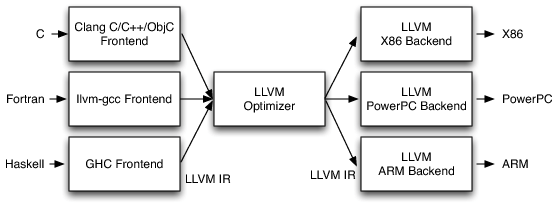
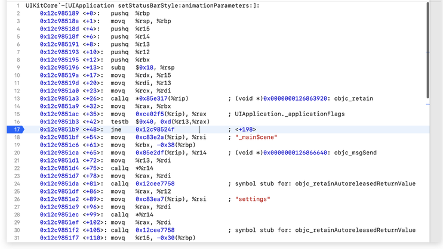

【待校准格式和补充被删除的部分】
【Archive】LLDB - A debugger powered by LLVM
关于LLDB之前有过一次简单的介绍，主要介绍了一些由xcode已经提供了的高效breakpoint设置方法，例如符号断点，objc-exception断点等，也提到了
image等相关概念。
想要学习LLDB，首先要简单了解一下LLVM的结构：

LLVM IR是一个complete code representation。同时是LLVM
Optimizer的唯一接口，所以LLVM的前端这个概念就等价于LLVM IR是什么，LLVM
IR是怎么工作的，以及LLVM IR的规则。
LLVM是一堆库的集合。LLVM被设计为一堆libraries的集合，而不是像GCC一样就是一整个玩意，也不像JVM或者.NET一样不透明，这使我们能够利用丰富的接口创作新的🔧。
LLDB本质上是依附于LLVM的一个工程，使用了LLVM的IR（Clang）作为parser来解析命令，使用LLVM
JIT来转换为target code ，使用LLVM disassembler、LLVM Target来处理calling
convention。
颜色备注：
红色：killer feature
黄色：useful feature
绿色：待评价feature
Frame
frame的概念：
Frame info: 查看当前帧的信息 frame info
Frame recognizer: recognizer是lldb支持外部python API的一个概念。
Frame select: 切换当前栈下的帧 frame select 0
举个例子，我们有个100层嵌套的NSDictionary，每一层的key不尽相同，有一个递归遍历的方法，我们希望停在[key
equalTo:@"1234"]的位置，这个时候我们如果想获得这个key所在的层级，我就可以通过给断点添加frame
select的方法来自动化的递归回去。
Frame variable: 有很多参数，主要是用来格式化字符串等
-s 可以给你标志上这个变量是local，arg，还是global。
-P 当前栈变量的递归打印description的深度
Thread : [th]
Backtrace: 获取某个线程当前的堆栈，也就是一堆frame
thread backtrace 3 获取线程3的堆栈
如果backtrace过长没显示全，或者没捞着啥有用的，可以用 -e 参数试一下
Continue: continue一个指定的线程，如果没有显示指定，默认是所有的线程
Thread continue 1 启动主线程
Thread continue 1 3 启动主线程和3线程
Exception: ...
Info: ...
Jump: 把pc寄存器的值设置到一个新的地址
List: 简要列举各个线程的状态
plan: ...
Return: 从当前帧立刻返回，如果需要返回值，optional yielding
return [-x] -- [<expr>]: 返回一个innermost expression evaluation
return [<expr>]: 返回返回值
Select: 切换当前选中的线程
Step-in: Alias: s
Step-over: Alias:n
Step-inst: instruction level single step. Alias: si
Step-inst-over: stepping over calls. Alias: ni
Step-out: Finish executing the current stack frame and stop after
returning.结束当前栈的调用，在最后一次返回的时候停止。Alias: finish
Step-scripted: 自定义的进行
Until: 直到一个地址或者某一行到达
Expression
Expr的命令就让LLDB像一个交互式命令工具一下，我们可以使用Expr命令Just-In-Time的编译一些代码并执行生效。expr命令的源码
Expr (int) printf ("1234")
Expr unsigned int $foo = 5
Expr -o -- [NSObject new]
Po [NSObject new]
Expr -d 1 -- <expression>
Print the dynamic type of the result of an expresion
Expr -i 0 -- function_with_a_breakpoint()
建议自己做个alias，我的alias是call_withbr
Calling a function so you can stop at a breakpoint in the function.
Expr -- : Alias : Print
Memory
Find:
找到当前进程的某个地址的值
History
给定一个地址，打印出在当前stack
trace中记录过的在这个地址上的所有的alloc和dealloc
Read
读取内存上的值
Region
读取包含某个地址的region信息
Write
直接写内存
Register :
Register read :
Register read --all
Register write :
Register write pc `$pc+8`
Disassemble :
翻译成汇编
Disassemble --frame : 当前栈帧翻译成汇编
之前看大哥们查开启-Oz
编译后frameBuffer内存泄漏问题的时候，应该就是使用这种方法查看的汇编代码，否则整个文件disassemble查找难度较大，信噪比太低。
disassemble --frame --mixed : 汇编和高级语言混合
disassemble --frame --bytes : 把机器码也打印出来
Bugrepot: [bu]
提供详细的当前堆栈的各种信息，比较鸡肋，通常我们调用栈就足够了，bugreport主要是递归展开了【命令：image
show-unwind --address xxxxxxxxxxx】调用栈每一层的汇编代码。
Language: [la]
language objc class-table dump -v
'UIButton'目前只发现这个用来逆向比较有用的，但是系统库的其实可以直接去gg搜，有专门的人dump苹果哈哈哈哈
Process: [pr]
一般我们使用xcode->debug里的attach就可以了
Target :
Target命令主要用来解析符号
对于一个动态库（iOS中的framework，macOS中的dylib），在使用的时候，我们都有一个rebase的过程，但是一个符号在库内的offset是不变的，理论上只要我们给一个动态库rebase到正确的地址，我们就可以拿到crashLog中崩溃栈地址对应的代码位置。
而LLDB为我们提供了根据offset寻找代码位置的能力。
如果我们有一个crashLog，有3个dylib。
crashLog中应该有如下信息:
Binary Images:
0x100000000 - 0x100000ff7 <A866975B-CA1E-3649-98D0-6C5FAA444ECF>
/tmp/a.out
0x7fff83f32000 - 0x7fff83ffefe7 <8CBCF9B9-EBB7-365E-A3FF-2F3850763C6B>
/usr/lib/system/libsystem_c.dylib
0x7fff883db000 - 0x7fff883e3ff7 <62AA0B84-188A-348B-8F9E-3E2DB08DB93C>
/usr/lib/system/libsystem_dnssd.dylib
0x7fff8c0dc000 - 0x7fff8c0f7ff7 <C0535565-35D1-31A7-A744-63D9F10F12A4>
/usr/lib/system/libsystem_kernel.dylib
libsystem_c.dylib的base是0x7fff83f32000，其他同理。
那我们如何找到0x10000ff7对应的代码位置呢？
(lldb) target create --no-dependents --arch x86_64 /tmp/a.out
(lldb) target modules add /usr/lib/system/libsystem_c.dylib
(lldb) target modules add /usr/lib/system/libsystem_dnssd.dylib
(lldb) target modules add /usr/lib/system/libsystem_kernel.dylib
先用target创建 a.out，把这三个动态库add进去
(lldb) target modules load --file a.out 0x100000000
(lldb) target modules load --file libsystem_c.dylib 0x7fff83f32000
(lldb) target modules load --file libsystem_dnssd.dylib 0x7fff883db000
(lldb) target modules load --file libsystem_kernel.dylib 0x7fff8c0dc000
然后用target modules load
这个命令，假装load一下我们的主二进制和dylib，模拟一下程序执行前rebase的过程。
(lldb) image lookup -a 0x00007fff8a1e6d46
(lldb) image lookup -a 0x00007fff84597df0
(lldb) image lookup -a 0x00007fff84598e2a
(lldb) image lookup -a 0x0000000100000f46
大功告成。
这里附送一个链接，理解使用dsym来解析crash堆栈。
Watchpoint
对地址生效的断点
这个玩意是真滴骚，zombie detector我觉得也是用的类似的方法
对地址生效目前我理解有可以做两件事：
检测你调的系统API/堆栈变量操作到底生效没有，见不是特别恰当的例子1
例子1:
//设置系统StatusBar的代码
//但是我遇到了设置完也没用的场景
//进一下汇编

//看到这里有一个testb和jne
//不出所料，在这里直接跳走了，啥也没干
//如果不看汇编
//如果使用的是某个库，我们能捞到某个变量的地址，但是看不到源码，只有一个API，但是出现了不符合预期的结果，我觉得比较有效的一个手段就是
watchpoint set expression 0xabcdef123 //最后跟的是某个系统地址
//通过watch这个地址并不需要进汇编查看汇编代码，如果修改了这个值，那么一定会被这个watchpoint观察到
例子2：
NSArray<MyModel *> *myModels = [NSArray
arrayWithDictionarys:data];
//用后端返回来的dicts生成一个数组，里面元素都是我们的model
//....….
//用一堆二进制了的库干了一堆事or调了别人的API以后
//myModels没了.........
如果你不想一层层跑过去看是谁把你的models给干了，一个简单有效的方式是给myModel这个地址加一个watchpoint～
Breakpoint: [br]
对方法生效的断点。
Breakpoint set --name main: Alias: br s -n main
--file test.c --line 12 : Alias: br s -f test.c -l 12
--method main: Alias: br s -m main。仅用于C++方法。
--name "[NSString stringWithFormat:]" 用名字设置符号断点
--selector <selector-name> 用selector设置符号断点
--condition: 设置断点条件
-E <source-language>: -E objc 设置objc的exception，objc可以换成c什么的
-F <full-name>: C++下就是nameSpace+所有参数，objc就是a full function
prototype with class and selector。
-t <thread-id> : The breakpoint stops only for the thread whose TID
matches this argument.
-s <shlib-name> : 只在指定的动态库上做这个符号断点
-r <regular-expression> : 使用正则打断点:
Br s -r cellforitem
Breakpoint command :
Add <index of breakpoint> : breakpoint add 2
表示给2号断点开始增加stop时的指令
Breakpoint modify:
-G : auto continue
-T <thread-name> : breakpoint stops only for the thread whose name
matches thread-name
-q <queue-name> : The breakpoint stops only for threads in the queue
whose name is given by this argument.
Image : [im]
Image list :列出所有的主执行程序和依赖的共享库
Image lookup --address : 根据一个地址查询信息。
Image lookup -r -n <runc_regex> : 根据正则查询debug symbols
Image lookup -r -s <runc_regex> : 根据正则查询非debug symbols
Image lookup --type <some type> : 使用某种类型名字查询相关信息
(lldb) im loo --type xxCell
Best match found in
/Users/folobe/Library/Developer/Xcode/DerivedData/xxxxxx
Image dump section <module-name> : dump某个模块
Image dump symtab : dump all symbols from main executable and all shared
libraries.
Command :
Command alias :
创建alias，如果想持久化这个alias，就像zsh命令一样，在～下面创建一个.lldbinit，在里面写上command
alias alias-name <raw-input>
Chisel plugin :
Slowanim <mutiple factor>
全局加速或者减速动画，对序列帧lottie同样生效
Alias for : expr [(CALayer *)[[[[UIApplication sharedApplication]
windows] objectAtIndex:0] layer] setSpeed:(CGFloat)%s]
Visualize : 使用一个地址渲染出图片，相当于xcode中的preview
Visualize (CALayer *)
Visualize (UIImage *)
Visualize (UIView *)
lldb使用CGRect等结构体
_tvFeed setFrame:(CGRect){0, 0, 320, 300}